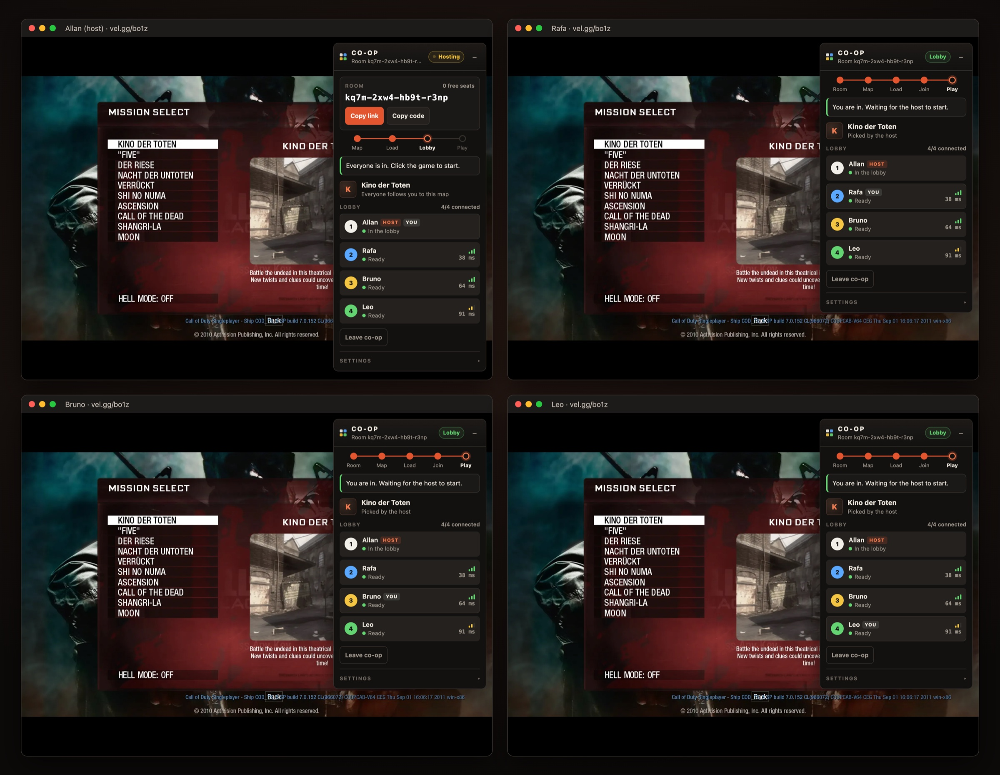
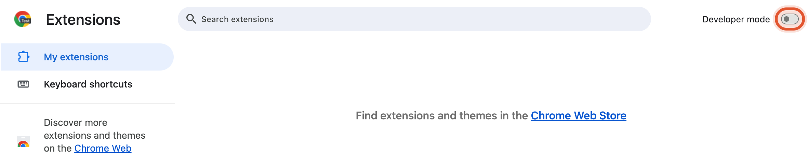
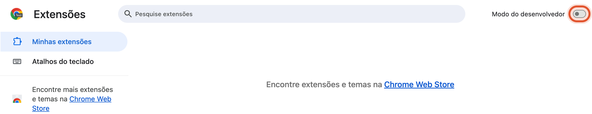
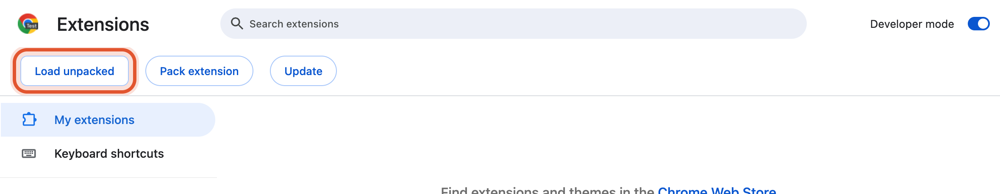
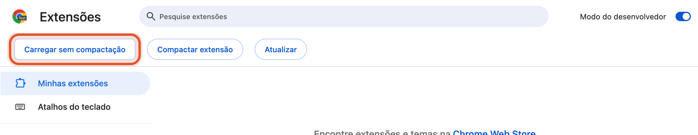
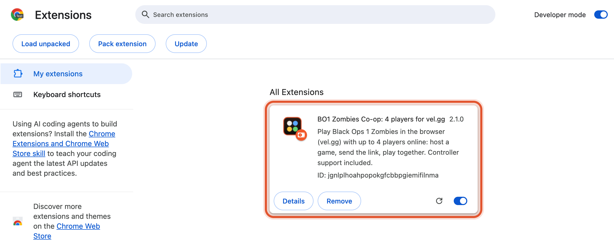
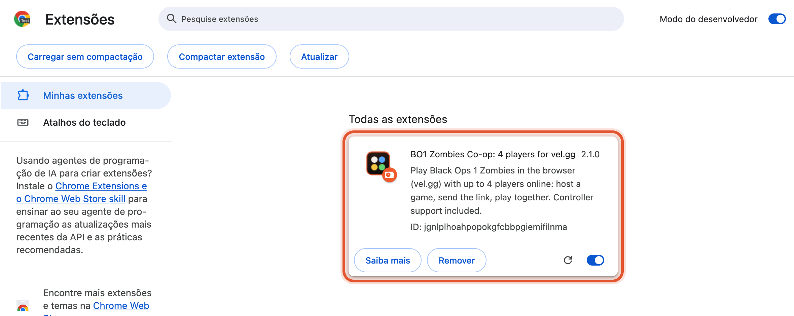

Black Ops 1 Zombies
with your squad, in the browser
Black Ops 1 Zombies
com o seu grupo, no navegador
A free Chrome extension that adds online co-op for up to 4 players to vel.gg/bo1z. Kino der Toten and all 10 maps.
Extensão gratuita do Chrome que adiciona co-op online para até 4 jogadores ao vel.gg/bo1z. Kino der Toten e os 10 mapas.

Install in 4 steps
Instale em 4 passos
About two minutes. Everyone who is going to play needs it.
Uns dois minutos. Todo mundo que vai jogar precisa instalar.
Download and unzip
Baixe e descompacte
Click Download the extension above, then unzip the file (double-click it on Mac; on Windows right-click → Extract All). You get a folder called bo1-zombies-coop.
Clique em Baixar a extensão lá em cima e descompacte o arquivo (no Mac é só dar dois cliques; no Windows, botão direito → Extrair tudo). Vai aparecer uma pasta chamada bo1-zombies-coop.
Open the extensions page and turn on Developer mode
Abra a página de extensões e ligue o Modo do desenvolvedor
Copy this address, paste it in Chrome's address bar and press Enter (Chrome doesn't let websites link to it):
Copie este endereço, cole na barra de endereços do Chrome e aperte Enter (o Chrome não deixa sites abrirem essa página por link):
Then switch on Developer mode, top right.
Depois ligue o Modo do desenvolvedor, no canto superior direito.


Click "Load unpacked" and pick the folder
Clique em "Carregar sem compactação" e escolha a pasta
Select the bo1-zombies-coop folder from step 1 (the one with manifest.json directly inside) and confirm.
Selecione a pasta bo1-zombies-coop do passo 1 (a que tem o manifest.json logo dentro) e confirme.


Done: open the game
Pronto: abra o jogo
The extension shows up in the list. Open vel.gg/bo1z: a Co-op card appears in the top right corner.
A extensão aparece na lista. Abra o vel.gg/bo1z: um cartão Co-op aparece no canto superior direito.


Play
Jogar
Host
Quem hospeda
- On the Co-op card, click Host a game and Copy link.
- Send the link to up to 3 friends.
- Pick a map: everyone follows you.
- When the lobby shows everyone as Ready, click the game.
- No cartão Co-op, clique em Hospedar partida e Copiar link.
- Mande o link para até 3 amigos.
- Escolha o mapa: todos vão junto.
- Quando todos aparecerem como Pronto no lobby, clique no jogo.
Friends
Amigos
- Open the invite link.
- Press any key when the page asks, to load the map.
- When the card says You are in, click the game.
- Abra o link de convite.
- Aperte qualquer tecla quando a página pedir, para carregar o mapa.
- Quando o cartão disser Você entrou, clique no jogo.
Update to a new version
Atualizar para uma versão nova
The Co-op card tells you when a new version is out. Extensions installed from a folder don't update by themselves, so:
O cartão Co-op avisa quando sai uma versão nova. Extensão instalada por pasta não se atualiza sozinha, então:
- Download the new zip and unzip it.
- Copy its files into your existing
bo1-zombies-coopfolder, replacing the old ones. - In
chrome://extensions, click the reload arrow (↻) on BO1 Zombies Co-op, then reload vel.gg.
- Baixe o zip novo e descompacte.
- Copie os arquivos dele para a sua pasta
bo1-zombies-coop, substituindo os antigos. - Em
chrome://extensions, clique na setinha de recarregar (↻) do BO1 Zombies Co-op e recarregue o vel.gg.
Your own relay (recommended for your group)
Relay próprio (recomendado para o seu grupo)
Players connect through a small relay on Cloudflare. The default one is shared by everyone who uses the extension and only lasts a few hours of play a day for all of them together (about 4 hours of 2-player games, 1½ hours of 4-player games). When it runs out, the card says so and co-op stops until midnight UTC. Your own relay is free, takes 5 minutes, and its allowance is only for your group.
Os jogadores se conectam por um pequeno relay na Cloudflare. O padrão é dividido por todo mundo que usa a extensão e só dura algumas horas de jogo por dia para todos juntos (umas 4 horas de jogo a 2, ou 1 hora e meia a 4). Quando acaba, o cartão avisa e o co-op para até as 21h (horário de Brasília). O seu próprio relay é grátis, leva 5 minutos, e a cota dele é só do seu grupo.
Create a free Cloudflare account
Crie uma conta grátis na Cloudflare
At dash.cloudflare.com/sign-up, then confirm your email (Cloudflare doesn't deploy anything before that). No credit card needed.
Em dash.cloudflare.com/sign-up, e depois confirme o e-mail (a Cloudflare não publica nada antes disso). Não precisa de cartão de crédito.
Click the button and deploy
Clique no botão e publique
Sign in, allow it to create a copy of the relay in your GitHub account (you need a free GitHub account), and click Deploy. If Cloudflare asks you to pick a workers.dev subdomain, any name works. It takes about a minute.
Entre na conta, autorize a criação de uma cópia do relay no seu GitHub (precisa de uma conta grátis no GitHub) e clique em Deploy. Se a Cloudflare pedir um subdomínio workers.dev, qualquer nome serve. Leva mais ou menos um minuto.
Copy your relay's address
Copie o endereço do seu relay
It looks like https://bo1-zombies-coop-relay.your-name.workers.dev and shows up when the deploy finishes (also under Workers & Pages in the Cloudflare dashboard).
Ele é parecido com https://bo1-zombies-coop-relay.seu-nome.workers.dev e aparece quando a publicação termina (também em Workers & Pages, no painel da Cloudflare).
Paste it in the Co-op card
Cole no cartão Co-op
On vel.gg: Settings → Change relay, paste the address, Save. Then host as usual: your invite links carry your relay, and your friends click Use this relay on their card.
No vel.gg: Configurações → Trocar relay, cole o endereço e clique em Salvar. Depois é só hospedar normalmente: seus links de convite levam o relay junto, e os amigos clicam em Usar este relay no cartão deles.
Prefer the terminal?
With Node.js 22+: git clone https://github.com/AllanLotta/bo1-zombies-coop, then cd bo1-zombies-coop/relay, npm install, npx wrangler login and npx wrangler deploy. It prints your relay's address.
Prefere o terminal?
Com Node.js 22+: git clone https://github.com/AllanLotta/bo1-zombies-coop, depois cd bo1-zombies-coop/relay, npm install, npx wrangler login e npx wrangler deploy. Ele mostra o endereço do seu relay.
Something went wrong?
Deu algum problema?
"This relay used up today's free allowance"
The shared relay is out for today; it comes back at midnight UTC. To play now, create your own relay: 5 minutes, free.
"Este relay usou toda a cota grátis de hoje"
O relay compartilhado acabou por hoje; ele volta às 21h (horário de Brasília). Para jogar agora, crie o seu relay: 5 minutos, grátis.
"Manifest file is missing or unreadable"
You picked the wrong folder. Pick the one that has manifest.json directly inside (not the folder around it, and not the .zip).
"O arquivo de manifesto está ausente ou ilegível"
Você escolheu a pasta errada. Escolha a que tem o manifest.json logo dentro (não a pasta de fora, nem o .zip).
I don't see the Co-op card on vel.gg
Check the extension is switched on in chrome://extensions, then reload the vel.gg tab. The card only shows on vel.gg.
Não aparece o cartão Co-op no vel.gg
Confira se a extensão está ligada em chrome://extensions e recarregue a aba do vel.gg. O cartão só aparece no vel.gg.
The extension disappeared or stopped working
The folder was deleted or moved. Put it back (or unzip it again) and click Load unpacked once more.
A extensão sumiu ou parou de funcionar
A pasta foi apagada ou movida. Coloque de volta (ou descompacte de novo) e clique em Carregar sem compactação outra vez.
"You and the host have different versions"
Everyone should have the latest version and reload the page.
"Versões diferentes do jogo"
Todo mundo precisa estar com a versão mais nova e recarregar a página.
Does it work in Edge, Brave or Opera?
They load Chrome extensions the same way (Edge: edge://extensions, Brave: brave://extensions), but only Chrome is tested. Firefox, Safari and phones are not supported.
Funciona no Edge, Brave ou Opera?
Eles carregam extensões do Chrome do mesmo jeito (Edge: edge://extensions, Brave: brave://extensions), mas só o Chrome foi testado. Firefox, Safari e celular não funcionam.
Do I need to own the game?
No. The game runs from vel.gg; the extension only adds co-op on top of it, in your own browser.
Preciso ter o jogo?
Não. O jogo roda pelo vel.gg; a extensão só adiciona o co-op por cima, no seu navegador.